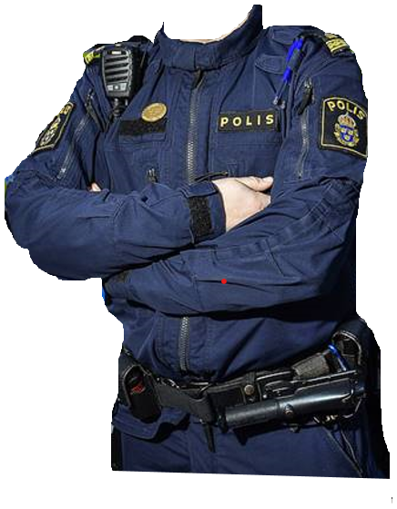
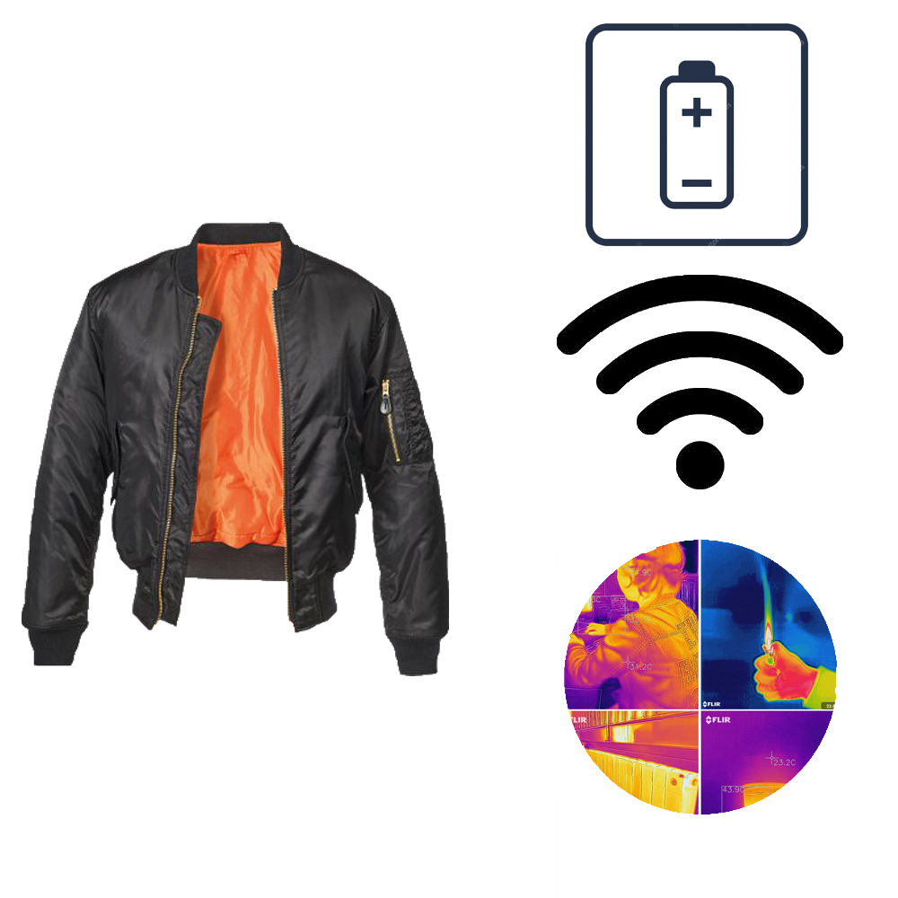
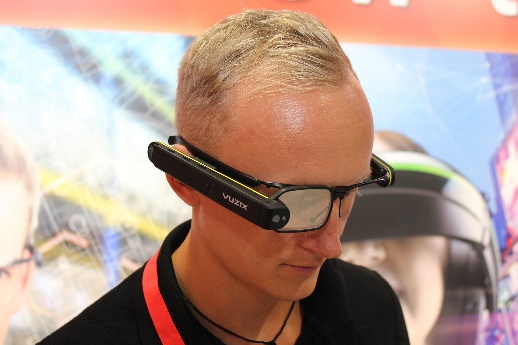

Polisen har alltid varit ett av de viktigaste jobben i världen. De skyddar och hjälper befolkningen från brottslighet. Vi har tillsammans skapat en skottsäker polisjacka, jacka med flexibel skärm, glasögon med inbyggd laser, hastighetsmätare och smartglasögon för att hjälpa och underlätta för folk inom polisyrket.
Skottsäker Jacka
-

Jacka med flexibel skärm
En jacka med flexibel skärm på vänstra ärmen som är kopplad till en kamera som tittar bak och en fram. Kamerorna ska vara FLIR, detta betyder att man kan se i mörker då kameran ser infrarött ljus/värme. Jackan är även utrustad med LED-lister som ersätter reflexer, internetrouter och ett större batteri.

Polisglasögon
Polisglasögon med inbyggd hastighetsmätare, värmekamera och mörkerseende i glasögonen. Detta ska underlätta för polisen att ta fast framför allt fortkörare.

Smartglasögon
Ett par snygga glasögon med smartfunktioner som ska göra vardagen smidigare. Glasögonen har en utfällbar OLED display som kan fällas ut från högersidan av bågen.